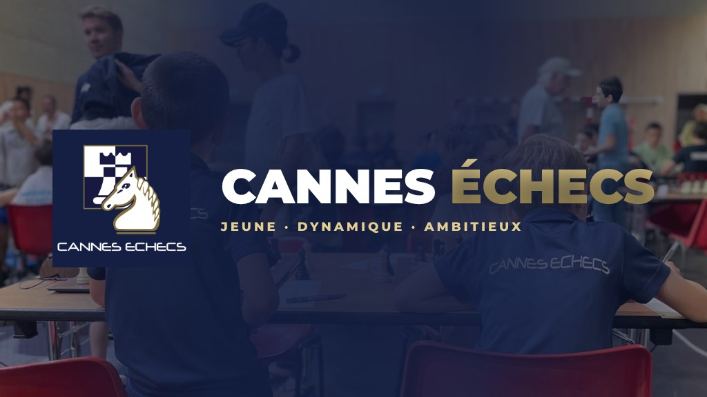

Fiche Google du club — guide pas à pas
Pour Romuald et Marlies. La fiche Google (Google Maps / « Google Business Profile ») est souvent le premier contact des familles : elle apparaît quand on cherche « échecs Cannes » ou « club d’échecs ».
1. Accéder à la fiche
- Aller sur business.google.com avec le compte Google du club (celui de info@cannes-echecs.fr de préférence).
- Chercher « Cannes Échecs ». Si la fiche existe déjà : cliquer sur « Revendiquer cette fiche » (Google envoie un code par courrier, SMS ou appel pour vérifier). Sinon : « Ajouter votre établissement ».
- Une fois la fiche à vous, tout se modifie directement depuis la recherche Google : taper « Cannes Échecs » en étant connecté, le panneau de gestion apparaît en haut.
- Ajouter l’autre personne comme gestionnaire : Menu ⋮ › Gestionnaires › Ajouter.
2. Informations à saisir
| Nom | Cannes Échecs |
| Catégorie | Commencer à taper « échecs » et choisir Club d’échecs (catégorie principale). Ajouter en secondaire une catégorie de cours (« cours », « école ») si Google la propose. |
| Adresse | 3 avenue du Petit Juas, 06400 Cannes |
| Téléphone | 04 93 39 41 39 |
| Site web | https://cannes-echecs.fr (à jour dès que le nouveau site est branché sur le domaine) |
| Lien de prise de rendez-vous | Le lien HelloAsso des adhésions |
| Date d’ouverture | 1985 |
3. Description (copier-coller, 750 caractères maximum)
Cannes Échecs est le club d’échecs du centre-ville de Cannes depuis 1985. Plus de 200 membres, du débutant de 4 ans au joueur classé. Cours pour enfants (Pitchounets dès 4 ans, École Échecs), cours adultes, cours particuliers, stages pendant les vacances et tournois toute l’année. Le club détient le record de France de titres de Champion de France Jeunes par équipes (10 titres) et organise les tournois d’échecs du Festival International des Jeux au Palais des Festivals. Partenaire de l’Éducation nationale depuis plus de 30 ans, labellisé Club Formateur par la FFE. Licence FFE incluse dans chaque formule, cours d’essai sur demande.
4. Horaires
| Lundi | 13h30 – 18h30 |
| Mardi | 17h – 19h (cours jeunes — à confirmer : le club est-il ouvert plus tôt ?) |
| Mercredi | 13h30 – 20h |
| Jeudi | 13h30 – 18h30 |
| Vendredi | 13h30 – 18h30 |
| Samedi · Dimanche | Fermé |
Horaires exceptionnels : pour chaque PICO (un samedi par mois à 13h30) et pendant les vacances scolaires, ajouter un « horaire exceptionnel » sur la date concernée — sinon Google affiche « fermé » ce jour-là.
Les horaires doivent être identiques sur la fiche Google, le site et les imprimés. Les modifier aux trois endroits à chaque changement de saison.
5. Photos (fournies dans ce dossier)
Logo : google-logo-720x720.jpg — Photo de couverture : google-couverture-1024x576.jpg

Puis ajouter les photos du dossier photos/ (cours, tournois, podiums). Les fiches avec beaucoup de photos récentes sont bien mieux mises en avant : ajouter 2 ou 3 photos chaque mois (PICO, stage, résultat).
Droit à l’image : ne publier que des photos d’enfants pour lesquels le club a l’autorisation des parents.
6. Faire vivre la fiche (5 minutes par mois)
- Posts Google : « Ajouter une mise à jour » pour chaque événement (PICO, stage, FIJ, Open de Pâques) avec une photo et un bouton « En savoir plus ». Les visuels réseaux sociaux du club conviennent.
- Avis : demander aux familles satisfaites de laisser un avis (lien « Demander des avis » à copier dans un e-mail ou la lettre d’info). Répondre à chaque avis, même court : « Merci, à bientôt au club ! ».
- Questions-réponses : ajouter soi-même les questions fréquentes (« À partir de quel âge ? » → dès 4 ans ; « Peut-on faire un cours d’essai ? » → oui, sur demande).